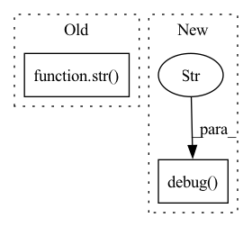

Pattern ID :3004
Before Change
logger.debug(
"Creating "
+ str( self._dim)
+ "-dimensional integration grid with "
+ str(N)
+ " points over"
+ str(integration_domain),After Change
// i.e. int(3.99999...) -> 3, a little error term is useful
self._N = int(N ** (1.0 / self._dim) + 1e-8) // convert to points per dim
logger.opt(lazy=True).debug(
"Creating {dim}-dimensional integration grid with {N} points over {dom}" ,
dim=lambda: str(self._dim),
N=lambda: str(N),
dom=lambda: str(integration_domain),
)
// Check if domain requires gradient
if hasattr(integration_domain, "requires_grad"):
requires_grad = integration_domain.requires_gradIn pattern: SUPERPATTERN
Frequency: 4
Non-data size: 2
Instances Fragment ID: 11556208
Project Name: esa/torchquad
Commit Name: 64d691efdb641cb7f8be0210a00e3352e12bbbc0
Time: 2022-03-14
Author: ga84muv@mytum.de
File Name: torchquad/integration/integration_grid.py
M Class Name: IntegrationGrid
N Class Name: IntegrationGrid
M Method Name: __init__(3)
N Method Name: __init__(3)
M Parent Class:
N Parent Class:
M File Name: torchquad/integration/integration_grid.py
N File Name: torchquad/integration/integration_grid.py
M Start Line: 32
M End Line: 74
N Start Line: 43
N End Line: 72
Before Change
with ScopedConfigure(None, None):
info("^^^ should see b = 33.3")
with ScopedConfigure(str( tmp_path / "test-logger") , ["json"]):
record("b", -2.5)
dump()
After Change
assert logger.level == INFO
logger.set_level(DEBUG)
assert logger.level == DEBUG
logger.debug("should appear" )
logger = configure(folder=str(tmp_path))
assert logger.dir == str(tmp_path)
logger.record("a", 3)
logger.record("b", 2.5) Fragment ID: 11556211
Project Name: dlr-rm/stable-baselines3
Commit Name: b52c6fc18fa4b48a259c839e8159b6c9f826e8ad
Time: 2021-06-14
Author: antonin.raffin@ensta.org
File Name: tests/test_logger.py
M Class Name: AnonimousClass
N Class Name: AnonimousClass
M Method Name: test_main(1)
N Method Name: test_main(1)
M Parent Class:
N Parent Class:
M File Name: tests/test_logger.py
N File Name: tests/test_logger.py
M Start Line: 110
M End Line: 145
N Start Line: 146
N End Line: 173
Before Change
for functional_name in combined_ops_map:
// \b boundary character to find the exact match from the functional_to_module lookup
pattern = r"\b" + functional_name + r"\b"
if search(pattern, str(node.target)) or search(pattern, str( node) ):
return functional_name
return NoneAfter Change
if string in combined_lookup.keys():
return string
logger.debug("Couldn"t find functional: %s in the lookup. If functional op isn"t math invariant,"
" add an entry in the lookup." , node_name)
return None
def _create_module_for_functional_node(node: torch.fx.node, functional_name: str) -> torch.nn.Module: Fragment ID: 11556214
Project Name: quic/aimet
Commit Name: 524e196b597fb493325fc25fa1d86cd60cb0b08c
Time: 2023-01-11
Author: quic_hitameht@quicinc.com
File Name: TrainingExtensions/torch/src/python/aimet_torch/model_preparer.py
M Class Name: AnonimousClass
N Class Name: AnonimousClass
M Method Name: _find_functional_name_for_node(1)
N Method Name: _find_functional_name_for_node(1)
M Parent Class:
N Parent Class:
M File Name: TrainingExtensions/torch/src/python/aimet_torch/model_preparer.py
N File Name: TrainingExtensions/torch/src/python/aimet_torch/model_preparer.py
M Start Line: 427
M End Line: 435
N Start Line: 427
N End Line: 438
Before Change
def sync(self) -> None:
for path in self.to_sync():
whole_path = self.sync_path.joinpath(path.relative_to(self.base_path))
self.client.put("{}/{}".format(self.container, str( whole_path.parent) ), path.name, path)
def delete(self) -> None:
files = self.client.list_files(self.container, self.sync_path)After Change
mangled_relative_path = mangler(relative_path, rank)
mangled_path = self.sync_path.joinpath(mangled_relative_path)
logger.debug(f"Uploading {path} to Azure: {self.container}/{mangled_path}" )
self.client.put(
f"{self.container}/{mangled_path.parent}",
mangled_path.name,
path, Fragment ID: 11556218
Project Name: determined-ai/determined
Commit Name: 49966efa5fea936d03630d0deb3251f908b5c3e6
Time: 2022-06-14
Author: maksim.kouznetsov@hpe.com
File Name: harness/determined/tensorboard/azure.py
M Class Name: AzureTensorboardManager
N Class Name: AzureTensorboardManager
M Method Name: sync(4)
N Method Name: sync(1)
M Parent Class: base.TensorboardManager
N Parent Class: base.TensorboardManager
M File Name: harness/determined/tensorboard/azure.py
N File Name: harness/determined/tensorboard/azure.py
M Start Line: 30
M End Line: 33
N Start Line: 35
N End Line: 48